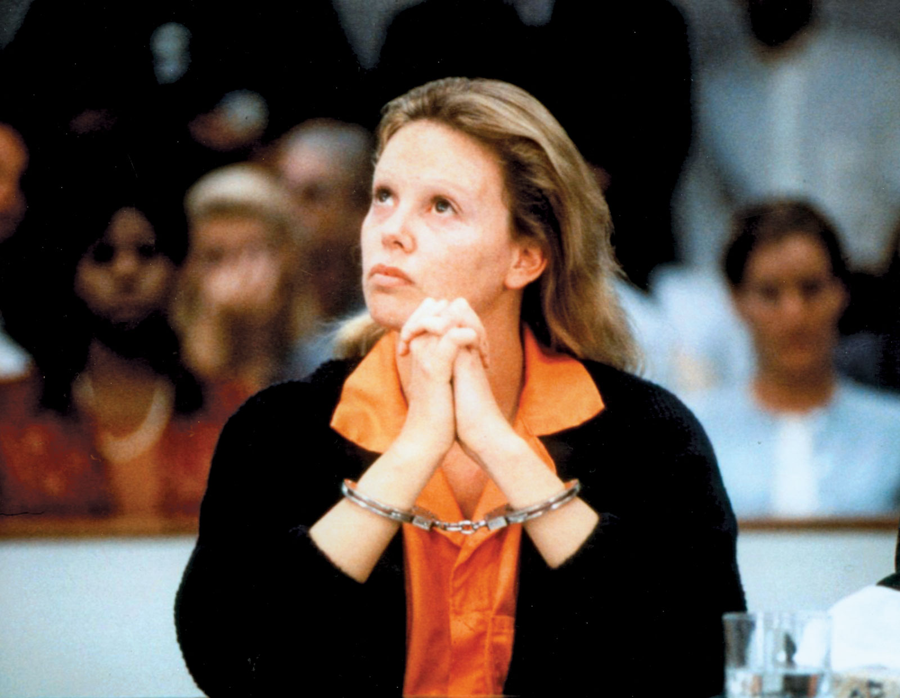
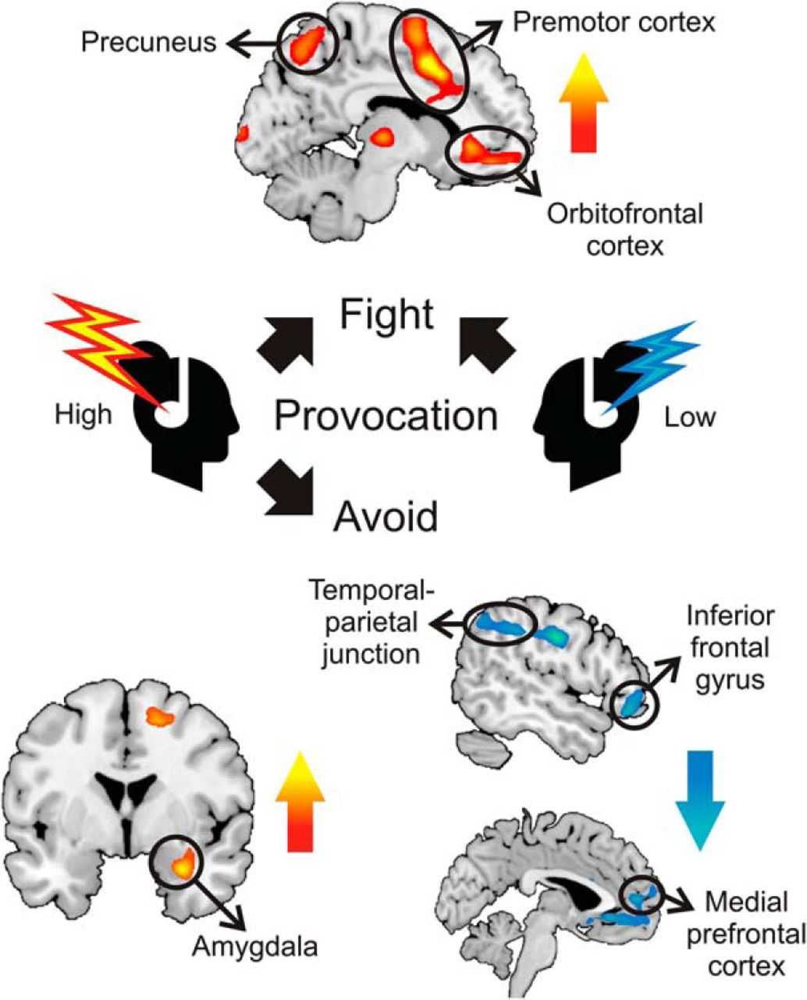
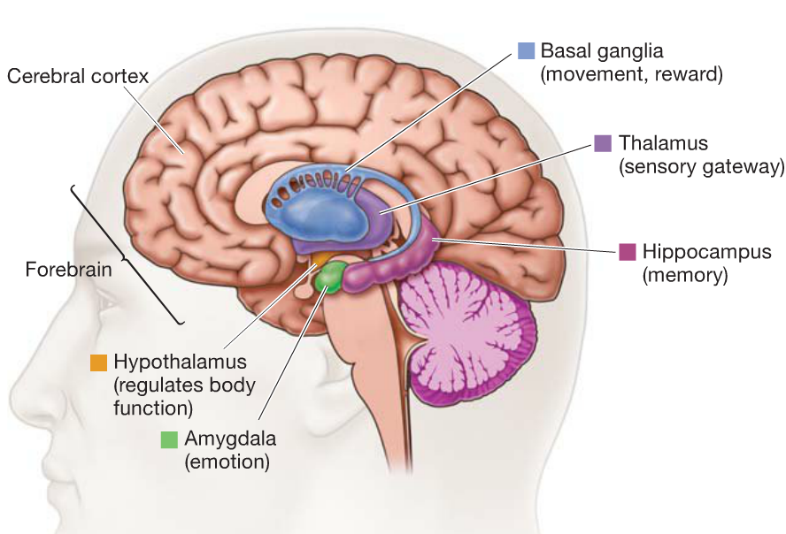

A serial killers are define as a person who murders three or more people, usually in service of abnormal psychological gratification.
A serial killer chooses their victims carefully and this is based on the victim’s availability, vulnerability, and desirability.
Aileen Wuornos was an American serial killer and prostitute who murdered seven men in Florida in 1989 and 1990
Her case drew national attention to issues such as the relationship between gender and violence and the legal treatment of acts of self-defense by women.
In her early life,she experienced horrifying tumult during her childhood: Her father killed himself while serving prison time for child molestation, while her mother abandoned Wuornos and her older brother Keith, leaving them to be raised by their grandparents.
Highway prostitute Aileen Carol Wuornos, known as the "Damsel of Death" for the seven slayings she is believed to committed, was executed by lethal injection Wednesday at the Florida State Prison. The 46-year-old serial killer was pronounced dead at 9:47 a.m. 6 minutes after the injection process began.
Her last words were, " Yes, I would just like to say I'm sailing with the rock, and I'll be back, like Independence Day, with Jesus."
Theodore Robert Bundy was an American serial killer who kidnapped, raped, and murdered numerous young women and girls during the 1970s and possibly earlier.
He confessed to 30 homicides that he committed in seven states between 1974 and 1978.
Bundy's grandmother suffered from depression and agoraphobia, and his grandfather has been described as the owner of a raging temper. His violent acts touched everyone from cats and dogs to employees and family members (some Bundy experts have theorized he was the result of Louise being raped by her father, though she said she'd been seduced and abandoned by a war veteran). Bundy may have experienced physical or psychological abuse at the hands of his grandfather, despite his later insistence that the two had a good relationship.
For the Florida homicides, he received three death sentences in two separate trials. Bundy was executed in the electric chair at Florida State Prison in Raiford, Florida on January 24, 1989.
His last words were, " I'd like you to give my love to my family and friends."
Jeffrey Dahmer was an American serial killer who took the lives of 17 males between 1978 and 1991. Over the course of more than 13 years, Dahmer sought out men, mostly African American, at gay bars, malls and bus stops, lured them home with promises of money or sex, and gave them alcohol laced with drugs before strangling them to death. He would then engage in sex acts with the corpses before dismembering them and disposing of them, often keeping their skulls or genitals as souvenirs. He frequently took photos of his victims at various stages of the murder process, so he could recollect each act afterward and relive the experience.
Dahmer claims that his compulsions toward necrophilia and murder began around the age of 14, but it appears that the breakdown of his parents' marriage and their acrimonious divorce a few years later may have been the catalyst for turning these thoughts into actions.
Dahmer was captured in 1991 and sentenced to 16 life terms. He was killed by fellow prison inmate Christopher Scarver in 1994.
Serial killers have low orbital cortex activity. This is the area that is believed to be involved with ethical behavior, more decision making, and impulse control.
Low activity in this region means there's less normal suppression of behaviors, including rage, violence, eating, sex, and drinking.
The study showed that psychopaths have reduced connections between the ventromedial prefrontal cortex (vmPFC), the part of the brain responsible for sentiments such as empathy and guilt, and the amygdala, which mediates fear and anxiety.
One of the core discoveries involved abnormalities in three distinct brain regions involved in regulating emotions: the anterior cingulate cortex, the orbital frontal cortex, and the amygdala. The anterior cingulate cortex works to communicate with and recruit other brain regions in response to conflict, while the orbital frontal cortex is involved with ethical behavior, moral decision-making, and impulse control; it works to moderate and constrain our impulsive outbursts.
The amygdala is involved with aggression, fear, and other emotional processing.
There is however significant variation in the prevalence of childhood abuse across studies (Beasley, 2004, Mitchell and Aamodt, 2005). Hickey (1997) reported that among a group of 62 male serial killers, 48% had been rejected as children by a parent or some other important person in their lives. Research into the impact of childhood abuse and neglect on violent behavior of adults who became serial killers concluded that adults who had been physically, sexually, and emotionally abused as children were three times more likely than non-abused adults to act violently as adults.